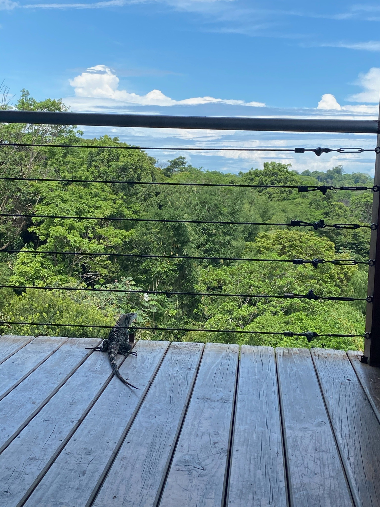

My Trip to Costa Rica
Hello, my name is
Terri
Once you learn to ride a bicycle, you never forget.
In my never-ending quest of self-improvement, I decided to tackle a fear: ride a bike for the first time in 20 years. The easiest (and did I mention cheapest) way to travel around the small Caribbean town was with a bicycle. Don’t let the impromptu photo in front of the rental shop fool you, the roads were full of pedestrians, motorcycles, cars, and other bicycles. This was by no means a joy ride. However, by the end of the day I could say that riding a bicycle was as easy as I remembered. I can confidentially tell you it’s true: “once you learn to ride a bicycle, you never forget”.
When in Costa Rica, eat Red Snapper.
When in Costa Rica, eat Red Snapper. Order it grilled or have it fried, but whatever you do just make sure to order this fish. Preferably keep the head the plate for the whole effect. It complements the patacones and the beans and rice. Restaurants in Manuel Antonio are known for their beautiful cliff views since this town is where the mountains meet the ocean. I felt like a fish out of water when I looked down at the trees. I wouldn’t recommend sitting to close to the edge if you have a fear of heights…. Or Iguanas. They are notorious for climbing up and biting guests. Pura Vida.
Did you know you can search Instagram for popular spots to visit?
Did you know you can search Instagram for popular spots to visit? I sure didn’t until I discovered this abandoned hotel full of graffiti (and gram worthy content) through a simple hashtag search. I invited my baby sister to visit for her 21st birthday. I essentially spent that afternoon taking pictures of my sister who had aspirations to be an influencer and birthday content is very popular. A year has passed since her photoshoot and she has done nothing with the pictures. Apparently nursing school was her true passion. At least I have one photo to show I was there.

“Do it for the gram”
I believe you should try to be open-minded, except when it comes to hiking. I don’t hike. I don’t even understand it. However, if you do find yourself on a hike, please hope that it’s really just a light trail. That’s how my close friends tricked me into seeing the Mountain Arenal. The next weekend they tried to trick me into hiking the Cloud Forest, but as the saying goes, “fool me twice shame on me.” Maybe one day I’ll see it.